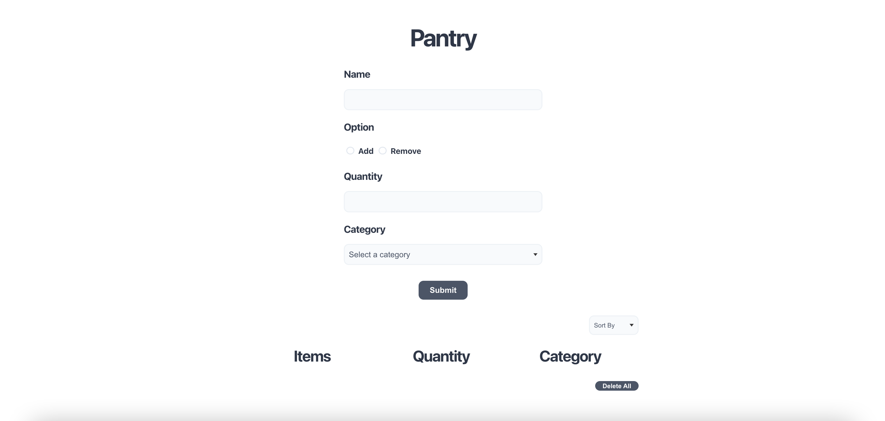

Developed personal website, housing all my professional experience such as resume, CV, projects, awards, and recognition, with HTML, CSS, and Javascript. My goal was to make it visually pleasing, transparent, honest, and digestable.

Pantry is a website application that stores information about the food in a user's pantry. It holds the capability to see, sort, add, update, and delete items. Built with React for the user interface, Spring Boot for the REST API, and Postgresql for the database. I made this because I wanted to learn how to use different technologies and languages together and learn how full stack development worked.

Wrote, in OCaml, a terminal application that takes in a database of items and user ratings to produce recommendations for the user using similarity ratings. Created for a school project.

In C, created own version of "malloc()" by memory mapping and keeping track of memory usage. Has the capability to free, merge, and split blocks of memory for memory allocation. Created for a school project.

In C, given a file with stock prices and times, an analysis of the data will show information such as best buy and sell time, profit, highest price, lowest price, and a display of their information in simple text plots. Created for a school project.

Wrote a program in Python to calculate when I could leave work given the time when I came in, and when I left and came back from lunch. I made this because I found myself calculating it everyday so I made a program to make it easier.

In OCaml, wrote a terminal application that simulates grep in OCaml. Can be used to parse through files and isolate text that matches the given conditions. Created for a school project.

In Java, used own implementation of a stack and queue to create a random maze, and then solve it. Completed with incorporating user input and visually representing the maze. Created for a school project.

Built with HTML and CSS. A timer used for keeping track of study/rest breaks. I made this because my eyes and body started acting up from sitting and staring at a screen for too long.

Informational app built with React Native, CSS, Express.js/Node.js, and Heroku for Minnehack '22. I worked on the front end with React and CSS. Won Best Space App by the Space Force.